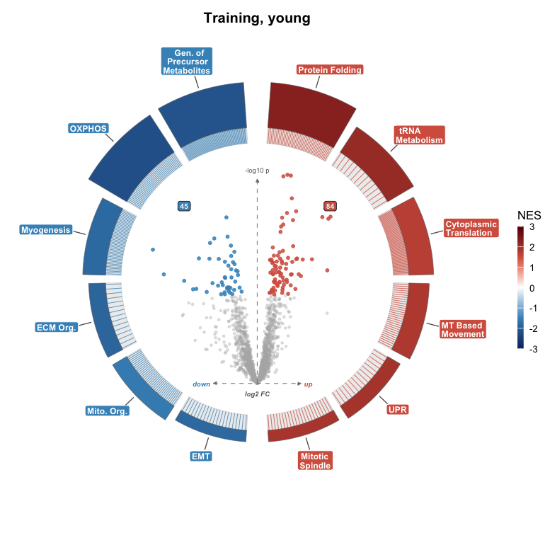

enrichVolcano draws gene-set enrichment around a differential-abundance volcano.
Install
install.packages("remotes")
remotes::install_github("Dustyn-T-Lewis/enrichVolcano")2.0.0 renamed the functions. Code written for 1.x runs on the last 1.x release:
remotes::install_github("Dustyn-T-Lewis/enrichVolcano@v1.1.0")Example
library(enrichVolcano)
yvo <- read_example("yvo")
sets <- load_gene_sets(c("Hallmark", "GO Slim"))
set.seed(1)
res <- run_enrichment(yvo, sets, tests = "fgsea")
plot_volcano_ring(yvo$da, res$fgsea, contrast = "Training_Young", title = "Training, young")
The documentation, a full walkthrough and the migration table from 1.x are on the site: https://Dustyn-T-Lewis.github.io/enrichVolcano/.